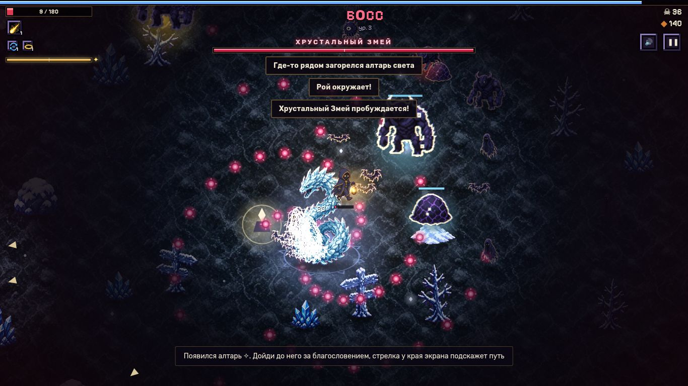

Свет как ресурс риска
Видно только то, что освещает фонарь. Свет копится сам и от осколков, а 50% заряда можно потратить на вспышку: она оглушает врагов и стирает их снаряды. Цена решения: фонарь тускнеет и тьма подступает ближе.
Последний свет. Короткий roguelite про фонарь, который одновременно дает обзор, бьет тьму и служит ресурсом для риска.
Видно только то, что освещает фонарь. Свет копится сам и от осколков, а 50% заряда можно потратить на вспышку: она оглушает врагов и стирает их снаряды. Цена решения: фонарь тускнеет и тьма подступает ближе.
Вместо 20-30 минут на один забег, как в классике жанра, игрок получает плотную 6-минутную сессию с четкой кульминацией. Идеальный ритм для Steam Deck, мобильных сессий и цикла «еще один забег».
Каждое из 7 оружий связано с парным усилением. На 5 уровне оружие перерождается в легендарную форму. Подсказка по паре видна прямо на карточке выбора, поэтому игрок с первых минут собирает осознанный билд.
Даже поражение приносит угольки на Алтарь улучшений (12 веток с бесплатным перераспределением), поэтому игрок всегда чувствует прогресс и хочет запустить следующий забег.

Обычный режим открывает земли последовательно (31-51 минута кампании). Если хочется сразу проверить поздние биомы, финального босса, 4 хранителей и Вечную ночь, в «Настройках» есть переключатель «Режим обзора»: он открывает всю карту без изменения реального сохранения.
Каждая из 5 земель требует 5 минут выживания и победы над уникальным боссом. Сложность растет по здоровью, урону и составу врагов. Даже идеальный прогон без единого поражения занимает больше 30 минут.
Бот в campaign.js проходит игру с нуля, тратит угольки на Алтаре и применяет вспышку фонаря. По 10 полным прогонам кампания занимает 31-51 минуту (в среднем ~40 минут), у живого игрока дольше. Смотреть все 10 прогонов →
Ориентиры: Vampire Survivors, Brotato, 20 Minutes Till Dawn, Halls of Torment. Аудитория охотно берет стильные survivors-like с новым твистом в импульсной ценовой категории.
Бесплатная демо-версия на 2 земли для Steam Next Fest (цель: медианная сессия от 25 мин). Хук «фонарь во тьме» и зрелищные боссы работают в первых 5 секундах трейлера и на стримах.
6-минутные забеги и управление одной кнопкой идеально ложатся на Steam Deck Verified и дальнейший порт на iOS/Android. Сенсорный ввод и геймпад уже работают в прототипе.
Перенос ядра на Godot 4 (PC + Web + Steam Deck), дата-драйвен архитектура контента, арт-дирекшн и финальный визуал 1 земли и героя.
Глубина механики света (рывок за свет, ульты, взаимодействие со средой), 12 оружий и 12 эволюций, 16 усилений, 6 хранителей.
6 земель с уникальной механикой среды (вода тушит свет, пепел жжет, лед скользит), 10 боссов, 14 типов врагов, события в забеге.
Ветвящееся дерево Алтаря, квесты, бестиарий, полная поддержка Steam Deck, страница в Steam и публичное демо на 2 земли.
Баланс по телеметрии демо и симулятору, локализация (RU, EN + 4 языка), достижения и облачные сохранения Steam.
Полировка геймфила, профилирование FPS, релизный трейлер, рассылка стримерам и прессе, запуск в раннем доступе.